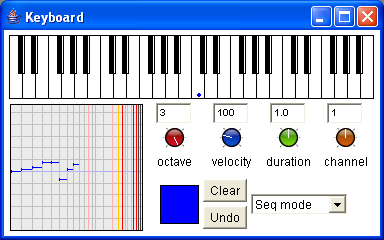
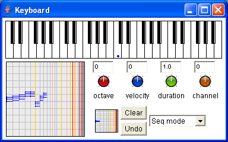

The keybord allows to build sequences or mix of musical objects. When a color is dragged in the central square (which is the case when a new keyboard is opened), the keyboard can be used to build sequences or chords of notes, each key will correspond to a different pitch.
Any musical object can be dragged in the central square and become the basic material used on each keyboard key. In the following example, a major chord has been dragged in the central square, thus each key will play a chord transposed depending on its position on the keyboard.

The right pop-up menu allows to switch between sequence and chord mode. The current octave transposition, velocity, duration and channel can be adjusted: you can set them by vertically moving the mouse on the rotative buttons, and precise them by pressing Ctrl. The result is available in the left box.